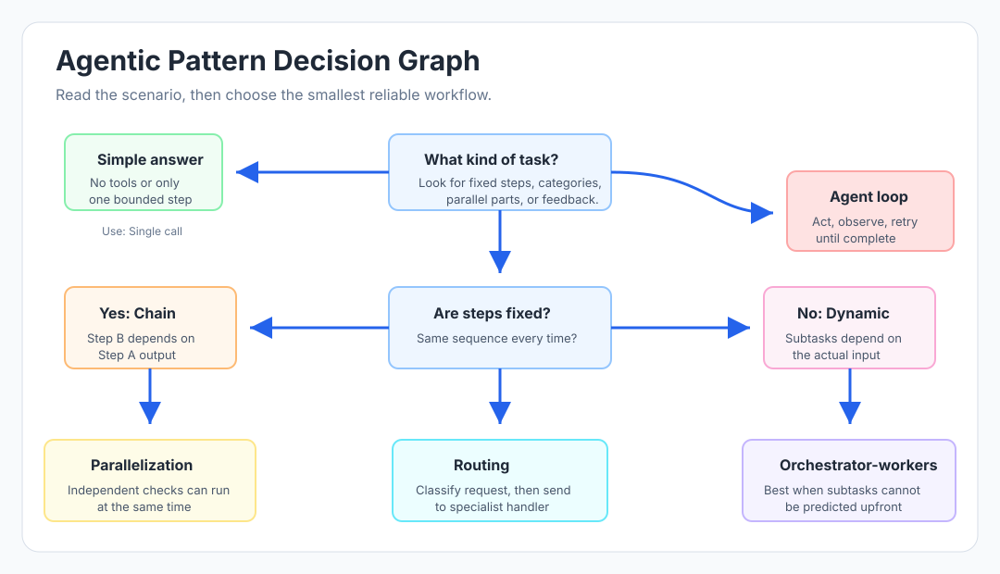

Certification Roadmap - Claude Architect Foundation
Exam: Claude Architect Foundation
Chapter: 00 - Certification Roadmap
Difficulty: Beginner
Last Updated: 2026-06
What This Topic Is About
Before studying individual chapters, you need a map. The Claude Architect Foundation exam is not only about knowing Claude features. It tests whether you can design a reliable Claude-based system for realistic production situations.
That means you must be comfortable answering questions like:
- Which agentic pattern fits this workflow?
- Should this be a prompt chain, a router, an orchestrator, or a full agent?
- Is this action safe to let Claude perform automatically?
- Should this be a tool, an MCP resource, a prompt, or an application-side rule?
- How do you prevent hallucinated extraction values?
- When do you use Claude Code sessions, Skills, hooks, and CLAUDE.md?
High-Level Learning Path

The fastest path is not "read everything once." The fastest path is:
- Build the foundation.
- Learn the architectural patterns.
- Practice scenario decisions.
- Review mistakes until the decision logic feels obvious.
Domain Weighting Mindset
| Study Area | Why It Matters | What To Practice |
|---|---|---|
| Claude fundamentals | You need the baseline model behavior and safety vocabulary | HHH, Constitutional AI, context windows, stateless API calls |
| Agentic patterns | Most architect questions are pattern-selection questions | Agent loop, routing, chaining, parallelization, orchestrator-workers |
| Tool use and MCP | This is the practical core of building Claude systems | Tool descriptions, schemas, tool results, MCP resources, error handling |
| Structured output | Production systems need dependable data, not nice-looking prose | JSON schema, nulls, enums, confidence, review queues |
| Claude Code workflows | Architect candidates must understand developer automation | CLAUDE.md, Skills, hooks, sessions, plan mode, CI review |
| Reliability and safety | The best architecture is the one that fails safely | Confirmation gates, retries, escalation, audit logs, permissions |
Core Architecture Graph

Use this graph as a decision tool:
- Single call is best when the answer is simple and no external action is required.
- Prompt chaining is best when the same fixed steps happen every time.
- Routing is best when different request types need different handlers.
- Parallelization is best when independent checks can run at the same time.
- Orchestrator-workers is best when the subtasks cannot be fully predicted in advance.
- Agent loop is best when the system must keep acting based on feedback until the task is complete.
The Exam Wants Trade-Off Thinking
Many answers will look technically possible. The correct answer is usually the one that balances:
| Trade-Off | Weak Choice | Strong Architect Choice |
|---|---|---|
| Simplicity vs autonomy | Build a full autonomous agent for every workflow | Start with the simplest workflow that meets the need |
| Prompt vs enforcement | Ask Claude to obey a critical business rule | Enforce the rule in application logic or hooks |
| Large context vs reliability | Put a huge document in one request and hope | Chunk, overlap, extract, merge, validate |
| Tool flexibility vs safety | Give one broad tool that can do everything | Use specific tools with clear descriptions and permissions |
| Speed vs correctness | Skip validation to reduce latency | Add validation where mistakes are costly |
| Automation vs human control | Execute irreversible actions immediately | Preview impact and require explicit confirmation |
21-Day Study Plan
Days 1-3: Claude Foundation
- Read chapter 01.
- Complete Claude 101 and Claude Platform 101 if available in Anthropic Academy.
- Make sure you can explain context windows, stateless API calls, and HHH without notes.
Days 4-7: Agentic Patterns
- Read chapter 02.
- Draw the difference between routing, chaining, parallelization, and orchestrator-workers.
- Practice choosing the simplest correct pattern for each scenario.
Days 8-12: Tool Use And MCP
- Read chapter 03 carefully.
- Study tool definitions,
tool_choice,stop_reason, MCP tools, resources, prompts, and error handling. - Build small mental examples: customer lookup, refund approval, document search, ticket creation.
Days 13-15: Structured Output
- Read chapter 04.
- Practice JSON schemas with nullable fields, enums, confidence scores, and human-review triggers.
- Remember: schema-valid does not mean truth-valid.
Days 16-18: Claude Code
- Read chapter 05.
- Review CLAUDE.md, Skills, hooks, sessions, plan mode, and code review workflows.
- Focus on workflow decisions: when to explore, when to plan, when to fork, when to start fresh.
Days 19-21: Practice And Review
- Complete chapter-wise questions.
- Take the full mock test.
- Review every wrong answer and write the reason in one sentence.
- Read quick revision notes the day before the exam.
Scenario Decision Checklist
When answering a scenario question, ask these questions in order:
- What is the user goal? Retrieval, extraction, action, coding, review, or orchestration?
- Does it need tools? If the answer depends on external state, a tool is usually needed.
- Is there a side effect? If yes, ask whether confirmation, permissions, or audit logging is required.
- Is the workflow fixed or dynamic? Fixed means chaining. Dynamic means routing, orchestration, or agent loop.
- Can parts run independently? If yes, consider parallelization or workers.
- Can the output be validated? If yes, prefer schemas, validators, tests, or human review.
- What failure would be dangerous? Add gates at that point, not only prompt instructions.
Common Wrong-Answer Traps
| Trap | Why It Is Wrong |
|---|---|
| "Just make the system prompt stricter." | Prompts are probabilistic. Critical rules need deterministic enforcement. |
| "Use one giant tool for everything." | Broad tools are hard for Claude to select safely and hard to permission. |
| "Use the full context window because it fits." | A document fitting in context does not guarantee reliable attention across the whole document. |
| "Retry all errors automatically." | Ambiguous write failures can duplicate real-world actions. |
| "Let the same coding session review its own code." | The same session may carry confirmation bias from generation context. |
| "Use orchestrator-workers for every multi-step task." | If steps are fixed and sequential, prompt chaining is simpler. |
Final Readiness Test
You are ready for a serious mock exam when you can answer these without checking notes:
- What is the difference between tool use and MCP?
- When should a failed MCP call be a protocol error versus
isError: true? - Why are tool descriptions so important?
- Why is
nullbetter than "Not specified" for missing extracted data? - When should a workflow use routing instead of prompt chaining?
- When does an irreversible action require a confirmation token?
- Why is Plan Mode useful before large Claude Code edits?
- What should be passed to a subagent, and what should stay isolated?
Quick Revision Summary
- The exam rewards architecture judgment, not memorized slogans.
- Use the simplest workflow that safely solves the problem.
- Tool use is the mechanism; MCP is the integration protocol.
- Tools take actions; resources provide readable context; prompts provide reusable instructions.
- Safety gates belong in application logic, hooks, permissions, and human review.
- Structured output needs schema plus semantic validation.
- Claude Code questions usually reward clean exploration, planning, session management, and independent review.
Notes by certification-study-hub. Chapter 00 - Certification Roadmap.